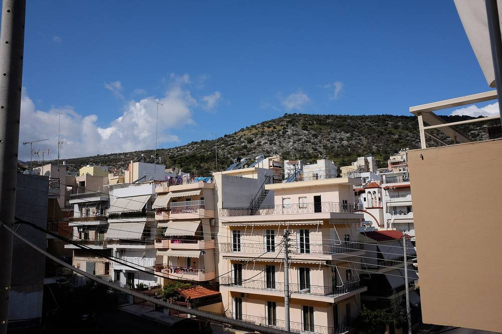

그리스, '에너지 공유 권리' 담은 전력시장 법안 의회 제출…다른 건물에서 만든 태양광 전기도 가정·중소기업·지자체가 나눠 쓴다

법안 12조로 전력법에 137Γ조 신설…6MW 이하 설비는 제3자가 운영 대행, 공공 소유 설비는 공유 전기의 평균 10% 이상을 취약가구에 돌리도록 노력해야
그리스 환경에너지부(ΥΠΕΝ)가 10월 31일 의회에 낸 전력시장 설계 개선 법안에, 가정·중소기업·공공기관이 다른 건물에서 만든 재생에너지 전기를 함께 나눠 쓸 수 있게 하는 '에너지 공유 권리' 조항이 들어갔다. 법안 12조는 EU 전력시장 설계 지침(2024/1711)을 국내법으로 옮기면서 전력법(법률 4001/2011)에 137Γ조를 새로 넣는데, 참여자는 사적 약정이나 법인을 통해 묶일 수 있지만 에너지 공유가 주된 영업·직업 활동이어서는 안 된다. 지리·기술 요건을 맞추면 공유해 계통에 넣은 전기를 정산 기간마다 각 참여자의 계량 사용량에서 빼 주고(계통이 연결되지 않은 섬은 15분 단위), 참여자는 전기 판매사를 자유롭게 고를 수 있되 세금·부담금·망 요금은 그대로 낸다. 참여자는 판매사·망 운영자와의 연락, 계약, 요금 청구, 발전량 감시, 설비 설치·유지를 제3자 운영자에게 맡길 수 있고, 운영자나 다른 제3자가 6MW 이하 재생에너지 발전·저장 설비를 소유하거나 관리할 수 있으며, 망 운영자는 사용량·배분 자료를 적어도 매달 모아 알려야 한다. 가정끼리 나누는 설비가 단독 가구 10.8kW, 공동주택 50kW 이하이면 판매사 의무 일부를 덜어 주는 간소한 규정을 적용하고 장관 결정으로 이 기준을 각각 30kW·100kW까지 달리 정할 수 있는데, 이는 더 큰 설비의 참여를 막는 상한은 아니다. 공공기관이 소유한 공유 설비의 전기는 취약 소비자·에너지빈곤 가구·시민이 쓸 수 있어야 하고 공공기관은 공유 전기의 평균 10% 이상이 이 용도로 가도록 최선을 다해야 하며, 법안이 통과되면 에너지규제청(ΡΑΑΕΥ) 의견을 들어 장관 결정으로 참여 절차·배분 조건·운영자 규정 등 세부를 정하게 된다.
시민에너지 관점
지붕이 없는 세입자, 그늘진 상가, 돈이 부족한 취약가구도 다른 건물의 태양광 전기를 나눠 쓸 수 있게 하고, 공공 설비에는 취약가구 몫까지 정하라는 것이 이번 그리스 법안의 뼈대다. 이웃끼리 전기를 나누면 망 비용을 피해 판매사와 다른 소비자에게 부담이 넘어간다는 우려가 있을 수 있지만, 법안은 참여자가 세금·부담금·망 요금을 그대로 내게 해 그 걱정을 먼저 막았다. 오스트리아는 2021년 재생에너지확대법으로 이웃끼리 전기를 나누는 에너지공동체를 제도화하면서 가까운 거리에서 나눈 전기에는 망 요금을 깎아 주는 데까지 나아갔는데, 나눔을 허용하는 데서 그치지 않고 지역에서 나눌수록 이익이 되게 설계한 셈이다. 국내도 공공건물·공공부지 태양광 전기를 인근 취약가구와 주민이 나눠 쓸 수 있도록 전력 공유를 법으로 열고, 그 몫을 주민 조직이 운영하게 해야 한다.
출처: ecopress 2026-11-02 Αργύρης 원문 보기
창간 전 시험 발행 기사입니다.
ギリシャ、「エネルギー共有の権利」を盛り込んだ電力市場法案を議会に提出…別の建物でつくった太陽光の電気も家庭・中小企業・自治体が分け合う
法案第12条で電力法に第137Γ条を新設…6MW以下の設備は第三者が運営を代行、公共所有の設備は共有電力の平均10%以上を脆弱世帯に回すよう努める
ギリシャ環境エネルギー省（ΥΠΕΝ）が10月31日に議会に提出した電力市場設計の改善法案に、家庭、中小企業、公的機関が別の建物でつくった再生可能エネルギーの電気を分け合って使えるようにする「エネルギー共有の権利」の条項が盛り込まれた。法案第12条はEUの電力市場設計指令（2024/1711）を国内法に移し、電力法（法律4001/2011）に第137Γ条を新設するもので、参加者は私的な取り決めや法人を通じてまとまることができるが、エネルギー共有が主たる営業・職業活動であってはならない。地理・技術の要件を満たせば、共有して系統に送った電気を精算期間ごとに各参加者の計量使用量から差し引き（系統につながっていない島は15分単位）、参加者は電力小売事業者を自由に選べる一方、税金・賦課金・送配電料金はそのまま支払う。参加者は小売事業者や系統運用者との連絡、契約、料金請求、発電量の監視、設備の設置・保守を第三者の運営者に任せることができ、運営者やほかの第三者は6MW以下の再生可能エネルギー発電・蓄電設備を所有・管理でき、系統運用者は使用量・配分のデータを少なくとも毎月集めて通知しなければならない。家庭どうしで分け合う設備が戸建て10.8kW、集合住宅50kW以下であれば小売事業者の義務の一部を軽くする簡素な規定を適用し、大臣決定でこの基準をそれぞれ30kW・100kWまで別に定められるが、これはより大きな設備の参加を禁じる上限ではない。公的機関が所有する共有設備の電気は脆弱な消費者、エネルギー貧困世帯、市民が使えるようにしなければならず、公的機関は共有電力の平均10%以上がこの用途に回るよう最善を尽くす必要があり、法案が可決されればエネルギー規制庁（ΡΑΑΕΥ）の意見を聞いたうえで、大臣決定により参加手続き、配分条件、運営者の規定などの細目を定めることになる。
市民エネルギーの視点
屋根を持たない借家人や日陰の店舗、資金の足りない脆弱世帯も別の建物の太陽光の電気を分け合えるようにし、公共の設備には脆弱世帯の分まで定めるよう求めるのが、今回のギリシャ法案の骨格だ。近隣どうしで電気を分け合えば送配電コストを逃れ、その負担が小売事業者やほかの消費者に回るという懸念もありうるが、法案は参加者に税金・賦課金・送配電料金をそのまま払わせることで、その心配を先に封じた。オーストリアは2021年の再生可能エネルギー拡大法で近隣どうしが電気を分け合うエネルギーコミュニティを制度化し、近い距離で分け合った電気には送配電料金を割り引くところまで踏み込んだ。共有を認めるだけでなく、地域で分け合うほど得になるように設計したわけだ。韓国も公共建物・公有地の太陽光の電気を近くの脆弱世帯や住民が分け合えるよう電力共有を法律で開き、その分を住民組織が運営できるようにすべきだ。
出典: ecopress 2026-11-02 Αργύρης 原文を読む
創刊前の試験発行記事です。
希腊向议会提交含“能源共享权”的电力市场法案…其他建筑产生的光伏电力也可由家庭、中小企业和地方政府分享
法案第12条在电力法中新增第137Γ条…6MW以下设施可由第三方代为运营，公共所有设施应尽力把平均10%以上的共享电力分给弱势家庭
希腊环境与能源部（ΥΠΕΝ）10月31日向议会提交的电力市场设计改进法案中，加入了“能源共享权”条款，使家庭、中小企业和公共机构可以共同使用在其他建筑产生的可再生能源电力。法案第12条将欧盟电力市场设计指令（2024/1711）转化为国内法，在电力法（第4001/2011号法律）中新增第137Γ条；参与者可通过私人协议或法人实体结合，但能源共享不得是其主要商业或职业活动。只要满足地理和技术条件，共享并送入电网的电量将在每个结算周期从各参与者的计量用电量中扣除（未与主电网相连的岛屿以15分钟为单位），参与者可自由选择售电公司，但税费、附加费和电网费用照常缴纳。参与者可把与售电公司和电网运营商的联络、签约、计费、发电量监测以及设施安装和维护委托给第三方组织者，组织者或其他第三方可以拥有或管理6MW以下的可再生能源发电和储能设施，电网运营商须至少每月收集并通报用电和分配数据。家庭之间共享的设施若独户不超过10.8kW、公寓楼不超过50kW，则适用减轻售电公司部分义务的简化规定，部长决定可将这一标准分别另定为最高30kW和100kW，但这并不是禁止更大设施参与的上限。公共机构拥有的共享设施所发电力须可供弱势消费者、能源贫困家庭和市民使用，公共机构应尽最大努力让平均10%以上的共享电力用于这一目的；法案通过后，将在听取能源监管局（ΡΑΑΕΥ）意见后由部长决定参与程序、分配条件、组织者规定等细则。
市民能源视角
这次希腊法案的骨架是：让没有屋顶的租户、背阴的商铺和缺钱的弱势家庭也能分享其他建筑的光伏电力，并要求公共设施留出弱势家庭的份额。有人可能担心邻里分享电力会逃避电网成本，把负担转嫁给售电公司和其他用户，但法案规定参与者照常缴纳税费、附加费和电网费用，先堵住了这一顾虑。奥地利在2021年通过《可再生能源扩张法》把邻里分享电力的能源社区制度化，还进一步对近距离分享的电力减免电网费用——不只是允许分享，而是设计成越在本地分享越划算。韩国也应以法律开放电力共享，让附近的弱势家庭和居民能分享公共建筑和公共用地上的光伏电力，并由居民组织来运营这部分电力。
来源: ecopress 2026-11-02 Αργύρης 查看原文
本文为创刊前试发行文章。
Greece tables electricity market bill with a "right to energy sharing", letting households, small businesses and municipalities share solar power produced at other buildings
Article 12 adds Article 137Γ to the electricity law; third parties may run schemes and own installations up to 6MW, and public bodies must make best efforts to direct on average at least 10% of shared power to vulnerable households
The electricity market design bill that Greece's Ministry of Environment and Energy (ΥΠΕΝ) submitted to parliament on 31 October includes a "right to energy sharing" provision allowing households, small and medium-sized enterprises and public bodies to share renewable electricity produced at other properties. Article 12 of the bill, which transposes the EU electricity market design directive (2024/1711), inserts a new Article 137Γ into the electricity law (Law 4001/2011); participants may join through private agreements or a legal entity, but energy sharing must not be their primary commercial or professional activity. Provided geographic and technical conditions are met, shared electricity fed into the grid will be deducted from each participant's metered consumption for each settlement period (15 minutes on non-interconnected islands), and participants keep the right to choose their supplier freely while still paying taxes, levies and network charges. Participants may hand a third-party organiser the tasks of dealing with suppliers and grid operators, signing contracts, billing, monitoring output and installing or maintaining equipment; the organiser or another third party may own or manage renewable generation or storage facilities of up to 6MW, and grid operators must collect and report consumption and allocation data at least monthly. A simplified regime that waives some supplier obligations applies to sharing between households where installed capacity does not exceed 10.8kW for single households or 50kW for apartment buildings, and a ministerial decision may set different thresholds of up to 30kW and 100kW respectively, though these are not caps that bar larger installations from taking part. Electricity from shared installations owned by public bodies must be made available to vulnerable consumers, energy-poor households or citizens, with public authorities required to make every effort to ensure that on average at least 10% of the shared energy goes to this purpose, and once the bill is passed a ministerial decision, issued after consulting the energy regulator (ΡΑΑΕΥ), will set out participation procedures, allocation terms, rules for organisers and technical details.
Citizen Energy View
The backbone of the Greek bill is to let tenants without roofs, shaded shops and cash-strapped vulnerable households share solar power from other buildings, and to ask public installations to set aside a share for vulnerable households. Some may worry that sharing among neighbours dodges grid costs and shifts the burden onto suppliers and other consumers, but the bill heads off that concern by keeping participants on the hook for taxes, levies and network charges. Austria went further with its 2021 Renewable Energy Expansion Act, which made neighbourhood energy communities a legal form and cut network charges for power shared over short distances, designing the system so that sharing locally pays rather than merely permitting it. Korea, too, should open electricity sharing by law so that nearby vulnerable households and residents can share solar power from public buildings and public land, and let residents' organisations run that share.
Source: ecopress 2026-11-02 Αργύρης Read the original
This article was published during the trial period before launch.